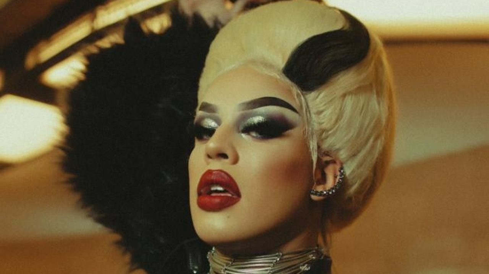

Daniel Garcia Felicione Napoleão (São Paulo, 18 de janeiro de 1995), também conhecido pelo seu alter ego Glória Groove, é um cantor, rapper, compositor, dublador, ator e drag queen brasileiro.
Iniciou sua carreira em 2002, como parte da nova formação do Balão Mágico, e em 2006 participou do quadro de calouros Jovens Talentos, no Programa Raul Gil, e no mesmo ano integrou o elenco da telenovela Bicho do Mato, na RecordTV. Após dez anos se dedicando à dublagem, ganhou notoriedade nacional em 2016 com a faixa "Dona". Em menos de três meses, o vídeo alcançou a marca de um milhão de visualizações no YouTube, emplacando outras faixas como "Império", "Catuaba", "Gloriosa", "Bumbum de Ouro" e "Coisa Boa".
Uma jornada de autoconhecimento e empoderamento de aspirantes a drag queen e drag king, sob o comando das madrinhas superpoderosas Alexia Twister e Gloria Groove.
Os pontos principais do reality em questão giram em torno das histórias pessoas apresentadas a cada episódio, todas muito diferentes, mas que partem de um mesmo princípio: aceitação. Mais do que ensinar truques de maquiagem e fornecer belos figurinos (o que, de fato, o programa faz), a atração se dedica a explorar o lado artístico dos participantes e, principalmente, a fazer com que eles manifestem o que há de melhor em sua essência por meio da arte.
Música lançada com a cantora Iza em 2019, e clipe com direção de Felipe Sassi, inspirado no clipe de Telephone, da Lady Gaga
Música lançada em 2019 com Leo Santana. Clipe com direção de Felipe Sassi
Lançada em 2020 com Manu Gavassi, o clipe conta com diversas referências do mundo pop